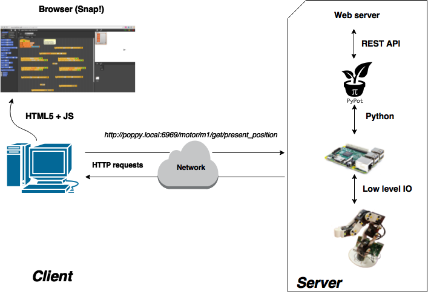

With other languages and/or connect it to the outside world¶
As Poppy Creatures are made to be easily integrated into educational, research or artistic projects, it is central that they can be easily connected with the external world and used with a large variety of programming languages. Thus, we desgined a REST API which permits the access of all main features of a Poppy Creature through HTTP requests.
Thanks to this REST API it is easy to:
- control your robot through any connected device (such as a smartphone),
- build bridges to control a Poppy Creature with any language (bridges already exist for Matlab and Processing thanks to our awesome contributors!),
- connect multiple Poppy Creatures so they can easily interact.
Warning: The REST API is still under active development and should be improved and stabilized soon.
The REST API gives you access to most of the Poppy Creature’s sensors and motors registers. You can retrieve and send values to the moros. You can also control primitives (start and stop them for instance). The exhaustive list can be seen here.
To use the REST API, run it via the homepage Poppy: http://poppy.local by launching “poppy-monitor.” Then send your HTTP request preceded by poppy.local:8080, exemple: http://poppy.local:8080/motor/list.json
A few requests are given in the table below: (all is here)
| Functionality | URL | |———————————————–|—————————————–| | Get motors list. | GET /motor/list.json | | Get the ‘present position’ of the motor ‘m3’. | GET /motor/m3/register/present_position | | Start the ‘dance’ primitive. | GET /primitive/dance/start.json |
Note: All answers are returned using JSON format.
This image sumarizes how the REST API works: 